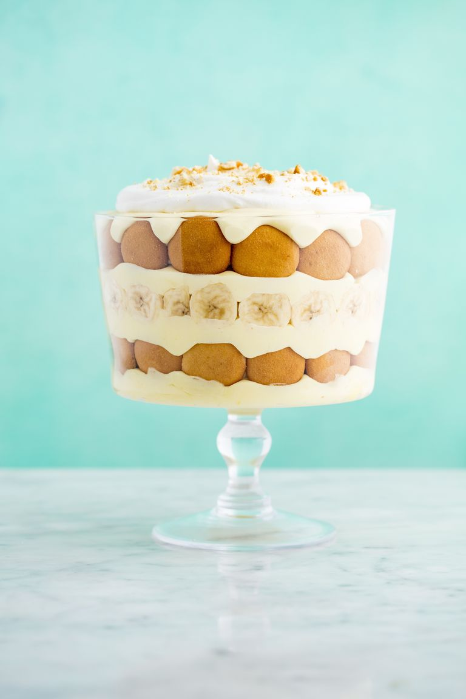

DIRECTIONS
1)
In a large mixing bowl, combine milk,
vanilla pudding mix and sweetened
condensed milk. Whisk thoroughly,
breaking up any lumps, and
refrigerate for at least 5 minutes, or
until set.
2)
In another large bowl, combine heavy
cream and vanilla. Beat until stiff
peaks form, 2 to 3 minutes. Set aside
half of the mixture for topping the
dish. Fold remaining half into the
pudding mixture.
3)
Cover the bottom of a 3-quart trifle
dish with vanilla wafers. Top with
one-third of the pudding mixture.
Cover with another layer of the wafer
cookies—you may want to also stand
some cookies up vertically, so you see
the full circle along the edge of the
trifle dish. Top with an even layer of
banana slices. Continue layering the
pudding, wafer cookies and banana
slices until you reach the top, ending
with a final layer of banana pudding.
4)
Refrigerate for at least 3 hours, or up
to overnight.
5)
Sweeten the remaining whipped
cream: Add sugar to whipped cream,
stirring to combine. Just before
serving, dollop on top of the banana
pudding, then sprinkle crumbled
wafer cookies on top.
